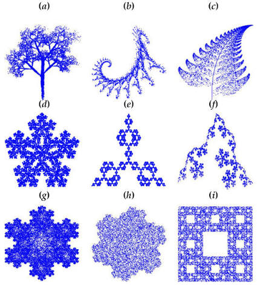

วิชาคณิต

ทฤษฎีกราฟถือกำเนิดขึ้นจากปัญหาการข้ามสะพานเคอนิกส์แบร์ก ก่อนจะพัฒนาเป็นวิชาที่ศึกษาจุดเชื่อมโยง (Nodes) และเส้นเชื่อม (Edges) เพื่ออธิบายเครือข่ายที่ซับซ้อน หนึ่งในโจทย์คณิตศาสตร์อันโด่งดังคือ "ปัญหาพนักงานขาย" (Traveling Salesperson Problem) ซึ่งถามหาเส้นทางที่สั้นที่สุดในการเดินทางผ่านทุกเมืองและกลับมาจุดเริ่มต้น แม้โจทย์จะฟังดูง่าย แต่จำนวนเส้นทางจะเพิ่มขึ้นแบบแฟกทอเรียลจนยากเกินกว่าการสุ่มคำนวณ การแก้ปัญหานี้จึงนำไปสู่การพัฒนาอัลกอริทึมจัดเส้นทางขนส่งของบริษัทโลจิสติกส์ และการวางเส้นทางส่งข้อมูลบนระบบเครือข่ายคอมพิวเตอร์